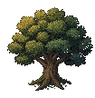
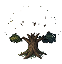
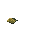
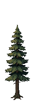

静止，也是一种状态。
素材保持原样。对照树干位置、轮廓和叶团，确认后面的变化来自运动。
同一份原文素材，同一个风场。把运动拆开，看看画面为什么不同。
想系统了解场景元素、游戏与情绪设计，以及对 AI 视频和花园项目的意义？阅读完整的「理解与价值」 →
素材保持原样。对照树干位置、轮廓和叶团，确认后面的变化来自运动。
上部偏移更多，根部保持原位。作为整树摆动的对照；细长植物可采用这种弯曲思路。
固定树干，树冠按位置延迟；整像素移动，10 次/秒更新姿态。风停后逐渐归于静止。
风以局部阵风经过。树叶可以停下，下一阵风的到来才有分量。玩家送出的风也进入同一个风场。
先读纸笺，再送出力度适中的风。每一声风铃回答一件小事；光色、窗灯与一只跟来的猫，让“归来”可被看见。
三声风铃之后去长椅坐下。没有催促的倒计时；完成目标后，庭院仍允许漫游、听风和停留。




技术与图片来源：SpriteCook，How to make pixel art trees move in the wind（2026-11-10）。从文章的橡树、松树分区示意图中恢复原生像素网格、去除示意背景并拆分；不是从文章视频里截帧播放。静止时树干与叶团可逐像素重组为提取后的原图。
本项目已接入：固定树干、可动叶团、位置相关的行波相位、局部阵风、弹簧回弹、整像素姿态、10 Hz 姿态更新、随风落叶和草地响应。玩法、角色、小屋、花径、纸笺、界面和声音合成为本项目实现。原文的 Godot 代码作为机制参考；此处没有运行 Godot。
SpriteCook 在线生成服务尚未连接，也没有消费生成额度。官方 Codex 插件仓库与官方接入说明已记录，后续有账号与素材生成需求时可另行接入。
文章图像版权归相应权利人。网站条款未明确授予文章插图再分发许可，本页在有出处的研究上下文展示原图及其分层对照，不标为 CC0，不作为独立素材包发布。使用者自生成内容的条款不自动适用于这些插图；复用资产需另行核对。查看完整来源与范围。
交付状态：真实素材已加载、风动机制已实现。对照中的差异来自独立实时渲染。生成工具的质量、商业授权与跨设备性能不在本次验证结论内。